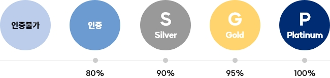

SK이노베이션은 2025년까지 사업장 폐기물 재활용률 85% 달성을 중장기 목표로 설정하여 본 핵심과제를 실행 하고자 합니다. 국내 자연순환기본법 요구 수준에 부합한 SK이노베이션 및 주요 자회사 평균 목표로, SK이노베이션은 2025년 조기 목표 달성 및 유지를 위한 활동을 적극적으로 추진해 나갈 계획입니다.
목표 달성을 위하여 재활용률 개선에 대한 폐기물 처리 협력업체와의 협력을 강화하고, 폐기물 재활용 개선을 위한 내부 과제를 지속적으로 발굴할 계획입니다. 검토 중에 있는 과제로는 폐기물 관리 시스템 고도화를 위한 SK이노베이션 및 주요 자회사 ZTWL 인증 취득, 안정적 재활용 처리 역량 확보를 위한 재활용 기술 개발 및 신규 재활용 협력업체 발굴 등이 있습니다. 이와 함께, SHE Coordination 협의체를 통한 SK이노베이션 및 주요 자회사 간 과제 개발을 활성화하고 과제 실행 현황을 공유할 뿐 아니라 상호 벤치마킹을 유도하여 목표 달성의 효율성을 증대하고자 합니다.
미국 소재 검증기관인 Underwriters Laboratory가 주관하는 자원순환 수준 평가 인증, 사업장에서 발생하는 총 폐기물 중 재활용이 불가능한 폐기물을 제외한 후 재활용률을 수치화하여 등급 부여
